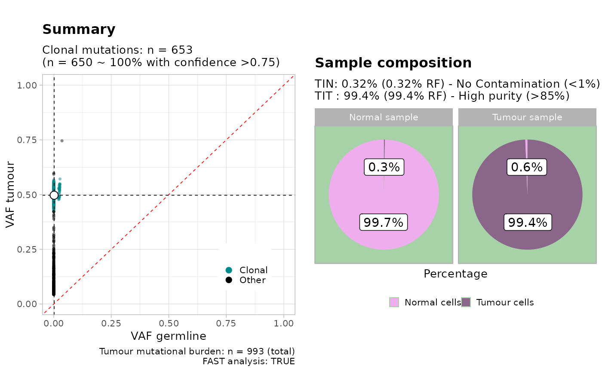

This function is a wrapper to call plot_simple_report.
# S3 method for tin_obj
plot(x, ...)A TINC analysis computed with autofit.
Extra S3 parameters.
A TINC analysis plot (a `ggplot` figure with multiple panels).
plot_simple_report.
rt = random_TIN()
#> ✔ Generated TINC dataset (n = 993 mutations), TIN (0.05) and TIT (1), normal and tumour coverage 30x and 120x.
#> Warning: Removed 2 rows containing missing values (`geom_bar()`).
#> Warning: Removed 2 rows containing missing values (`geom_bar()`).
plot(autofit(input = rt$data, cna = rt$cna, FAST = TRUE))
#> [ TINC ]
#>
#>
#> ── Loading TINC input data ─────────────────────────────────────────────────────
#> ✔ Input data contains n = 993 mutations, selecting operation mode.
#> ! Found CNA data, retaining only mutations that map to segments with predominant karyotype ...
#>
#>
#> ── CNAqc - CNA Quality Check ───────────────────────────────────────────────────
#>
#> ℹ Using reference genome coordinates for: GRCh38.
#> ✔ Fortified calls for 993 somatic mutations: 993 SNVs (100%) and 0 indels.
#> ! CNAs have no CCF, assuming clonal CNAs (CCF = 1).
#> ! Added segments length (in basepairs) to CNA segments.
#> ✔ Fortified CNAs for 993 segments: 993 clonal and 0 subclonal.
#> Warning: [CNAqc] a karyotype column is present in CNA calls, and will be overwritten
#> ✔ 993 mutations mapped to clonal CNAs.
#>
#>
#> ── Genome coverage by karyotype, in basepairs. ──
#>
#> # A tibble: 1 × 4
#> minor Major n karyotype
#> <dbl> <dbl> <dbl> <chr>
#> 1 1 1 2979 1:1
#> ✔ n = 993 mutations mapped to CNA segments with karyotype 1:1 (largest available in basepairs).
#> ✔ Mutation with VAF within 0 and 0.7 ~ n = 992.
#>
#> ── Analysing tumour sample with MOBSTER ────────────────────────────────────────
#>
#> [ MOBSTER fit ]
#>
#> ✔ Loaded input data, n = 992.
#> ❯ n = 992. Mixture with k = 1,2 Beta(s). Pareto tail: TRUE and FALSE. Output
#> clusters with π > 0.02 and n > 10.
#> ! mobster automatic setup FAST for the analysis.
#> ❯ Scoring (without parallel) 2 x 2 x 2 = 8 models by reICL.
#>
#>
#>
#> ℹ MOBSTER fits completed in 8.6s.
#>
#> ── [ MOBSTER ] My MOBSTER model n = 992 with k = 1 Beta(s) and a tail ──────────
#> ● Clusters: π = 77% [C1] and 23% [Tail], with π > 0.
#> ● Tail [n = 223, 23%] with alpha = 1.4.
#> ● Beta C1 [n = 769, 77%] with mean = 0.49.
#> ℹ Score(s): NLL = -1919.46; ICL = -3780.13 (-3797.52), H = 17.39 (0). Fit
#> converged by MM in 9 steps.
#>
#> ℹ With CNA, TINC will estimating tumour purity adjusting by copy number and mutation multiplicity.
#> ℹ Mutant allele copies 1 for karyotype 1:1
#> Warning: You did not pass enough input colours, adding a gray colour
#> Available: C1, Tail
#> Missing: NA
#>
#> ✔ MOBSTER found n = 769 clonal mutations from cluster C1
#>
#> ── Analysing normal sample with BMix ───────────────────────────────────────────
#>
#>
#> ── BMix fit ────────────────────────────────────────────────────────────────────
#>
#> ℹ Binomials k_B = 1 and 2, Beta-Binomials k_BB = 0; 4 fits to run.
#>
#> ℹ Bmix best fit completed in 0.01 mins
#>
#> ── [ BMix ] My BMix model n = 769 with k = 2 component(s) (2 + 0) ──────────────
#> • Clusters: π = 98% [Bin 2] and 2% [Bin 1], with π > 0.
#> • Binomial Bin 1 with mean = 0.00808278472294984.
#> • Binomial Bin 2 with mean = 0.00116649051923823.
#> ℹ Score (model selection): ICL = 376.61.
#> Scale for x is already present.
#> Adding another scale for x, which will replace the existing scale.
#> Scale for fill is already present.
#> Adding another scale for fill, which will replace the existing scale.
#> Warning: Removed 2 rows containing missing values (`geom_bar()`).
#> Warning: Removed 551 rows containing missing values (`geom_raster()`).
#> ✔ Binomial peaks 0.00808278472294984 and 0.00116649051923823 with proportions 0.016207603734574 and 0.983792396265426. Clonal score 0.00127858707500372 with TINN 0.00255717415000744
#>
#> ── Analysing tumour and normal samples with VIBER ──────────────────────────────
#>
#> [ VIBER - variational fit ]
#>
#> ℹ Input n = 992, with k < 5. Dirichlet concentration α = 1e-06.
#> ℹ Beta (a_0, b_0) = (1, 1); q_i = prior. Optimise: ε = 1e-06 or 1000 steps, r = 3 starts.
#> [easypar] 2023-06-27 16:52:12.088277 - Overriding parallel execution setup [TRUE] with global option : FALSE
#>
#> ✔ VIBER fit completed in 0.02 mins (status: converged)
#>
#> ── [ VIBER ] My VIBER model n = 992 (w = 2 dimensions). Fit with k = 5 clusters.
#> • Clusters: π = 79% [C3] and 21% [C5], with π > 0.
#> • Binomials: θ = <0, 0.48> [C3] and <0, 0.09> [C5].
#> ℹ Score(s): ELBO = -144657.649. Fit converged in 14 steps, ε = 1e-06.
#>
#> ✔ Reduced to k = 2 (from 5) selecting VIBER cluster(s) with π > 0.02, and Binomial p > 0 in w > 0 dimension(s).
